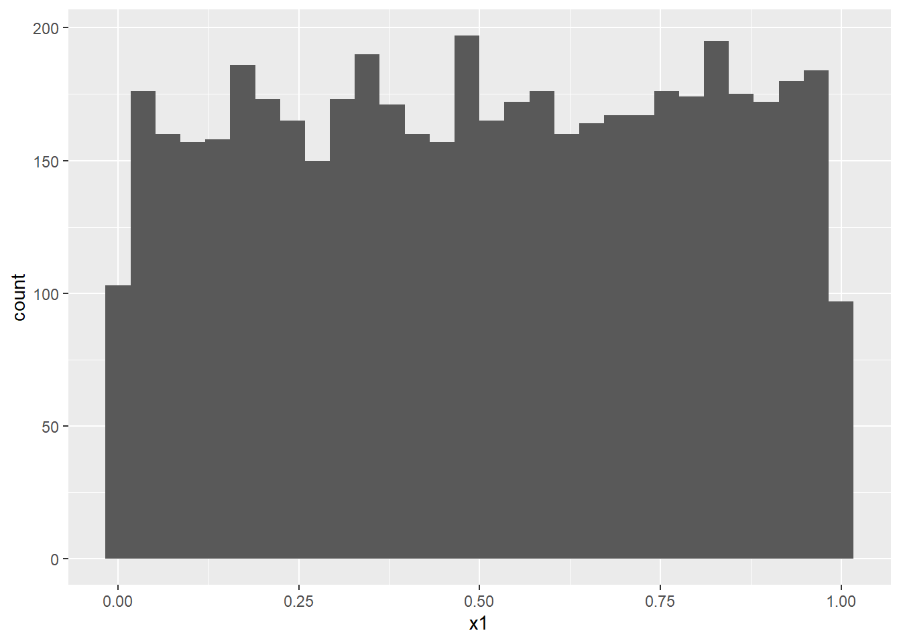
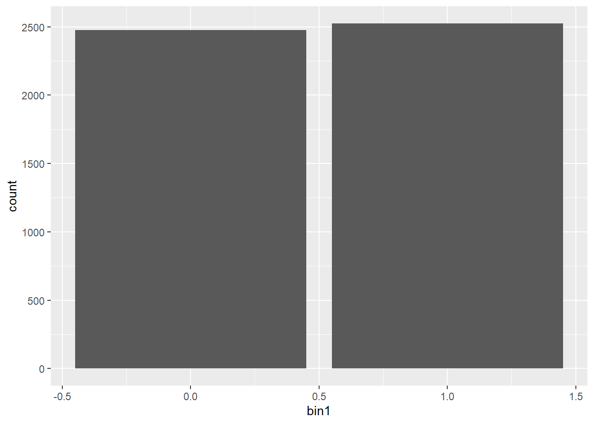
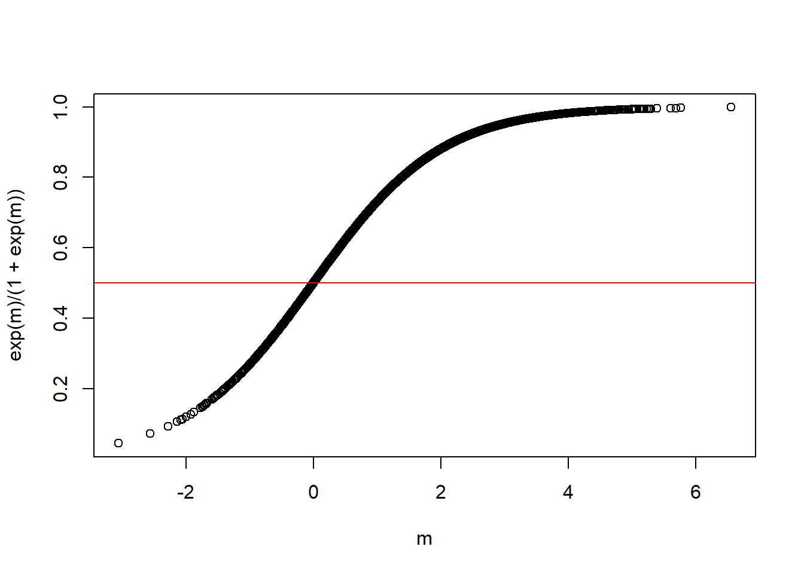
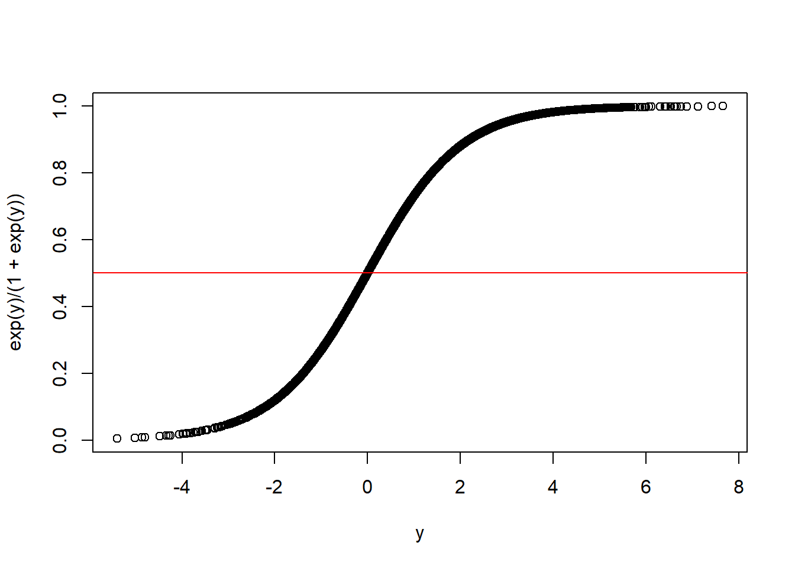
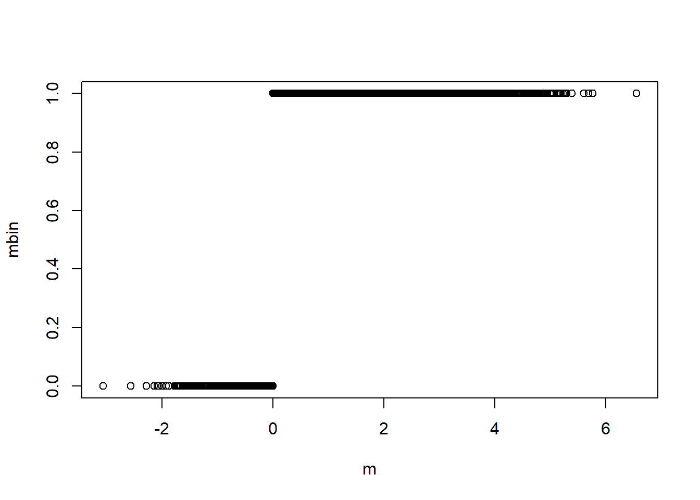
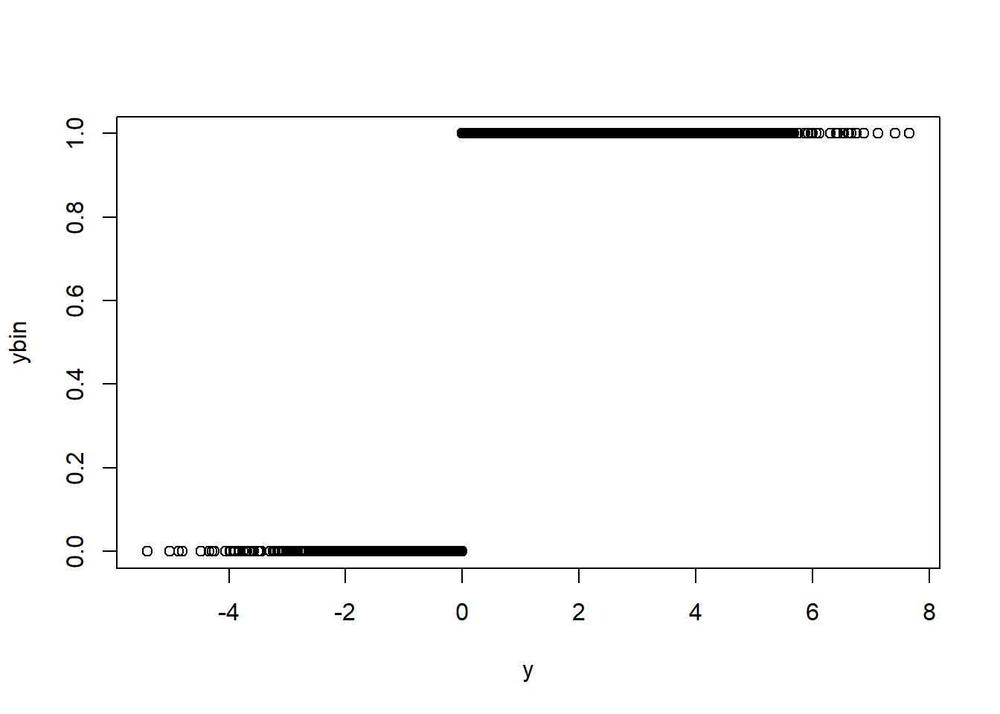
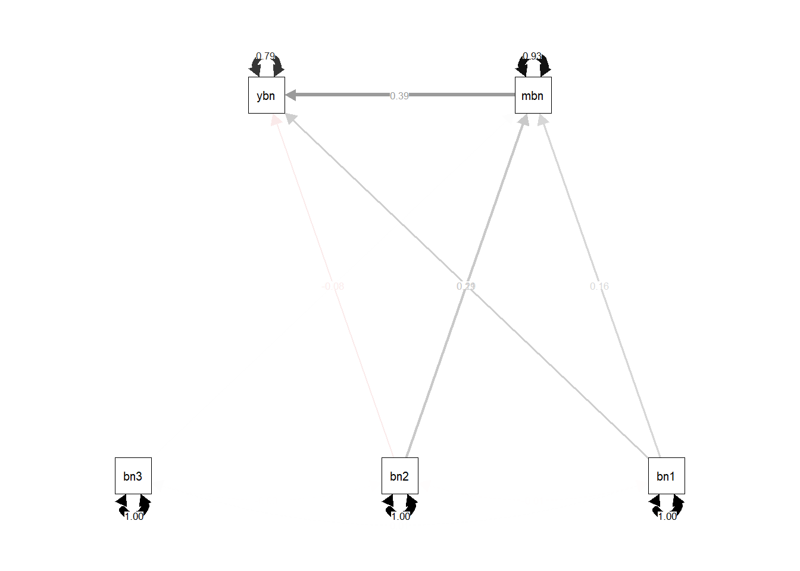

x1 = runif(5000)
x2 = runif(5000)
x3 = runif(5000)
bin1 = ifelse(x1 > 0.5,1,0)
bin2 = ifelse(x2 > 0.5,1,0)
bin3 = ifelse(x3 > 0.5,1,0)
m = 1.5*x1 + 2*x2 + rnorm(5000)
y = 0.5*x1 - 2.5*x2 + 1.3*m + rnorm(5000)Métodos
Geração e transformação de dados
Esta proposta ilustra a aplicação do SEM para variáveis categóricas binárias usando a transformação de Yule para aproximar a matriz dos coeficientes de correlação de Pearson a partir da razão de chances (odds ratio OR) por uma fórmula bem conhecida \((OR-1)/(OR+1)\).
O primeiro exemplo é baseado em processos de geração de dados conhecido para evitar incerteza sobre o verdadeiro modelo, praticamente inevitável para dados empíricos. Um conjunto de dados com 5000 observações foi gerado para permitir a aproximação da normalidade. Primeiramente, três variáveis aleatórias contínuas, denominadas \(x_1\) a \(x_3\), foram criadas a partir de uma distribuição uniforme. As variáveis não foram correlacionadas na população. Suas versões binárias, denominadas \(BIN_1\) a \(BIN_3\), foram obtidos codificando os valores acima da média como 1 versus 0, caso contrário. Duas variáveis dependentes contínuas foram criadas pelas seguintes equações:
\[m = 1.5 x_1 + 2 x_2 + e_1\]
\[y = 0.5 x_2 - 2.5 x_3 + 1.3 m + e_2\]
library(ggplot2)
ggplot(data = as.data.frame(x1), aes(x=x1))+geom_histogram()`stat_bin()` using `bins = 30`. Pick better value with `binwidth`.
ggplot(data = as.data.frame(bin1), aes(x=bin1))+geom_bar()
com \(e_1\) e \(e_2\) sendo erros aleatórios normalmente distribuídos \(N(0,1)\), gerados a partir de diferentes sementes (seeds).
As versões binárias das variáveis dependentes, denominadas \(MBIN\) e \(YBIN\), foram criados aplicando a regra de classificação de regressão logística, ou seja, pontuação 1 se \(exp(m)/(1 + exp (m))\) e \(exp(y)/(1 + exp(y))\) excederem 0.5 versus 0 caso contrário.
plot(m,exp(m)/(1 + exp (m)))
abline(h=0.5, col = "red")
plot(y,exp(y)/(1 + exp (y)))
abline(h=0.5, col="red")
mbin = ifelse(exp(m)/(1 + exp (m)) > 0.5, 1,0)
ybin = ifelse(exp(y)/(1 + exp(y)) > 0.5, 1,0)plot(m,mbin)
plot(y,ybin)
As razões de chances (OR) observadas entre as variáveis de interesse nos conjuntos de dados gerados são relatadas na tabela 1. As relações estruturais entre as variáveis no segundo conjunto de dados estão representadas na Figura 2.
library(epitools)
RRtable = table(bin1,ybin)
riskratio.wald(RRtable)$data
ybin
bin1 0 1 Total
0 849 1627 2476
1 320 2204 2524
Total 1169 3831 5000
$measure
risk ratio with 95% C.I.
bin1 estimate lower upper
0 1.000000 NA NA
1 1.328879 1.286896 1.372231
$p.value
two-sided
bin1 midp.exact fisher.exact chi.square
0 NA NA NA
1 0 1.165922e-74 7.672061e-73
$correction
[1] FALSE
attr(,"method")
[1] "Unconditional MLE & normal approximation (Wald) CI"oddsratio.wald(RRtable)$data
ybin
bin1 0 1 Total
0 849 1627 2476
1 320 2204 2524
Total 1169 3831 5000
$measure
odds ratio with 95% C.I.
bin1 estimate lower upper
0 1.00000 NA NA
1 3.59403 3.113139 4.149206
$p.value
two-sided
bin1 midp.exact fisher.exact chi.square
0 NA NA NA
1 0 1.165922e-74 7.672061e-73
$correction
[1] FALSE
attr(,"method")
[1] "Unconditional MLE & normal approximation (Wald) CI"# valor aproximado de coeficiente de correlação - aproximação
cor(bin1,ybin) [1] 0.2552873# coeficinente de Phi - variáveis binárias
sqrt(chisq.test(table(bin1,ybin), correct=FALSE)$statistic/length(bin1))X-squared
0.2552873 library(psych)
Attaching package: 'psych'The following objects are masked from 'package:ggplot2':
%+%, alphatetrachoric(RRtable)Call: tetrachoric(x = RRtable)
tetrachoric correlation
[1] 0.43
with tau of
0 0
-0.012 -0.726 Yule(RRtable)[1] 0.5646524YuleCor(RRtable)Yule and Generalized Yule coefficients
Call: YuleCor(x = RRtable)
Yule coefficient
0 1
0 0.98 -0.98
1 -0.98 0.98
Upper and Lower Confidence Intervals =
0 1
0 1 0.97
1 -1 1.00YuleBonett(RRtable)Yule and Generalized Yule coefficients
Lower CI Yule coefficient Upper CI
[1] 0.51 0.56 0.61# Logistic regression
m1 = glm(bin1 ~ ybin, family = binomial)
m1_ = glm(ybin ~ bin1, family = binomial)
require(MASS)Carregando pacotes exigidos: MASSexp(confint(m1))Waiting for profiling to be done... 2.5 % 97.5 %
(Intercept) 0.3310119 0.4281106
ybin 3.1162033 4.1536021confint.default(m1) 2.5 % 97.5 %
(Intercept) -1.104304 -0.8471722
ybin 1.135632 1.4229170# https://bmcmedresmethodol.biomedcentral.com/articles/10.1186/1471-2288-6-13/tables/1
# ** Back-transformed from Q to OR by (1+Q)/(1-Q) - onde Correlation (Q) estimate
library(epiDisplay)Carregando pacotes exigidos: foreignCarregando pacotes exigidos: survival
Attaching package: 'survival'The following object is masked from 'package:epitools':
ratetableCarregando pacotes exigidos: nnet
Attaching package: 'epiDisplay'The following objects are masked from 'package:psych':
alpha, cs, lookupThe following object is masked from 'package:ggplot2':
alphalogistic.display(m1)
Logistic regression predicting bin1
OR(95%CI) P(Wald's test) P(LR-test)
ybin: 1 vs 0 3.59 (3.11,4.15) < 0.001 < 0.001
Log-likelihood = -3297.9639
No. of observations = 5000
AIC value = 6599.9277library(sjPlot)#refugeeswelcomelibrary(sjmisc)
library(sjlabelled)
Attaching package: 'sjlabelled'The following object is masked from 'package:ggplot2':
as_labeltab_model(m1)| bin1 | |||
|---|---|---|---|
| Predictors | Odds Ratios | CI | p |
| (Intercept) | 0.38 | 0.33 – 0.43 | <0.001 |
| ybin | 3.59 | 3.12 – 4.15 | <0.001 |
| Observations | 5000 | ||
| R2 Tjur | 0.065 | ||

data_art1 = data.frame(bin1,bin2,bin3,mbin,ybin)
library(lavaan)This is lavaan 0.6-12
lavaan is FREE software! Please report any bugs.
Attaching package: 'lavaan'The following object is masked from 'package:psych':
cor2covlibrary(lavaanPlot)
# Model specification
model1 = '
# Structural model
mbin ~ b1*bin1 + b2*bin2 + b3*bin3
ybin ~ a1*bin1 + a2*bin2 + a3*bin3
ybin ~ a4*mbin
'
# Model estimation
model1.fit = sem(model1,
data = data_art1,
estimator = "ML",
meanstructure = FALSE)
summary(model1.fit,
rsquare = TRUE,
standardized = TRUE,
fit.measures = TRUE)lavaan 0.6-12 ended normally after 1 iterations
Estimator ML
Optimization method NLMINB
Number of model parameters 9
Number of observations 5000
Model Test User Model:
Test statistic 0.000
Degrees of freedom 0
Model Test Baseline Model:
Test statistic 1523.991
Degrees of freedom 7
P-value 0.000
User Model versus Baseline Model:
Comparative Fit Index (CFI) 1.000
Tucker-Lewis Index (TLI) 1.000
Loglikelihood and Information Criteria:
Loglikelihood user model (H0) -2518.197
Loglikelihood unrestricted model (H1) -2518.197
Akaike (AIC) 5054.394
Bayesian (BIC) 5113.049
Sample-size adjusted Bayesian (BIC) 5084.450
Root Mean Square Error of Approximation:
RMSEA 0.000
90 Percent confidence interval - lower 0.000
90 Percent confidence interval - upper 0.000
P-value RMSEA <= 0.05 NA
Standardized Root Mean Square Residual:
SRMR 0.000
Parameter Estimates:
Standard errors Standard
Information Expected
Information saturated (h1) model Structured
Regressions:
Estimate Std.Err z-value P(>|z|) Std.lv Std.all
mbin ~
bin1 (b1) 0.083 0.007 11.472 0.000 0.083 0.157
bin2 (b2) 0.114 0.007 15.612 0.000 0.114 0.213
bin3 (b3) 0.003 0.007 0.459 0.646 0.003 0.006
ybin ~
bin1 (a1) 0.164 0.011 15.214 0.000 0.164 0.194
bin2 (a2) -0.069 0.011 -6.351 0.000 -0.069 -0.082
bin3 (a3) -0.001 0.011 -0.049 0.961 -0.001 -0.001
mbin (a4) 0.621 0.021 29.992 0.000 0.621 0.391
Variances:
Estimate Std.Err z-value P(>|z|) Std.lv Std.all
.mbin 0.066 0.001 50.000 0.000 0.066 0.931
.ybin 0.142 0.003 50.000 0.000 0.142 0.792
R-Square:
Estimate
mbin 0.069
ybin 0.208# Visualize the path model
library(semPlot)
semPaths(model1.fit,
rotation = 3,
layout = "tree2",
what = "std",
posCol = "black")